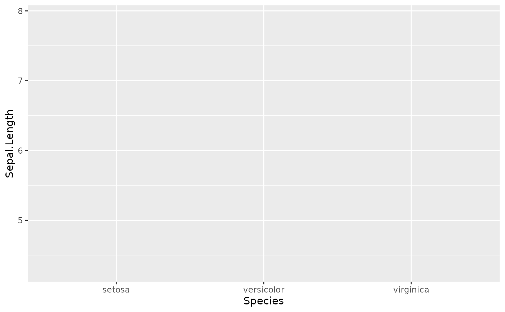
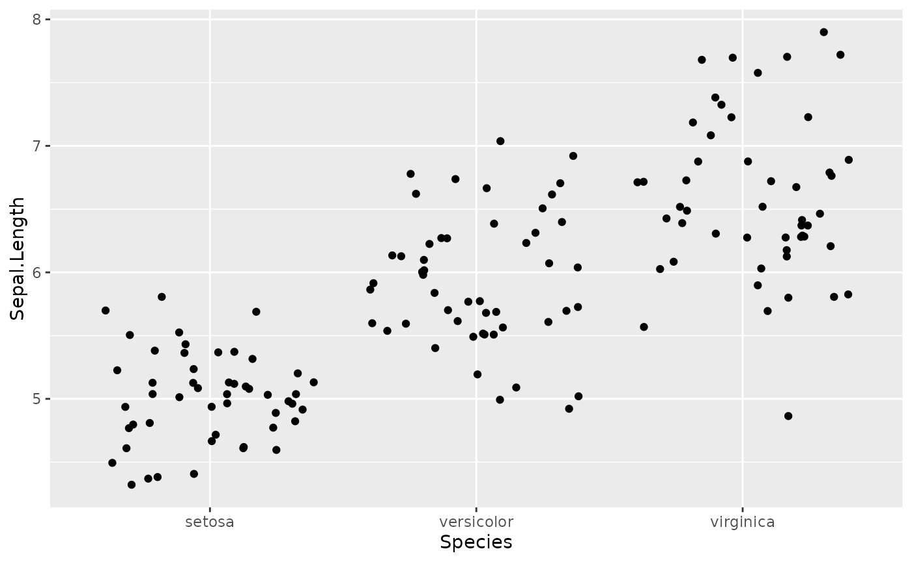
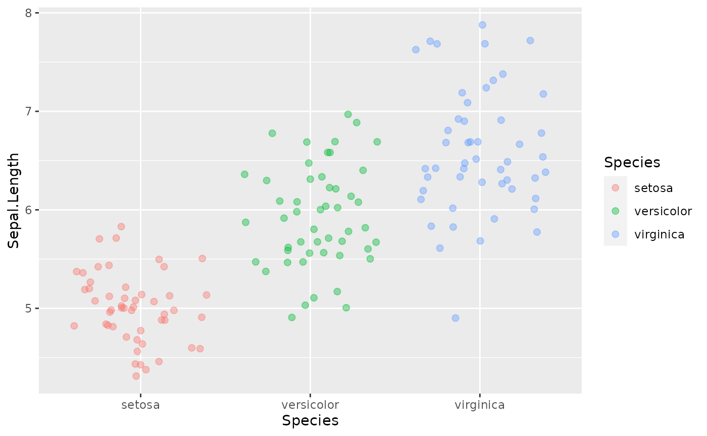
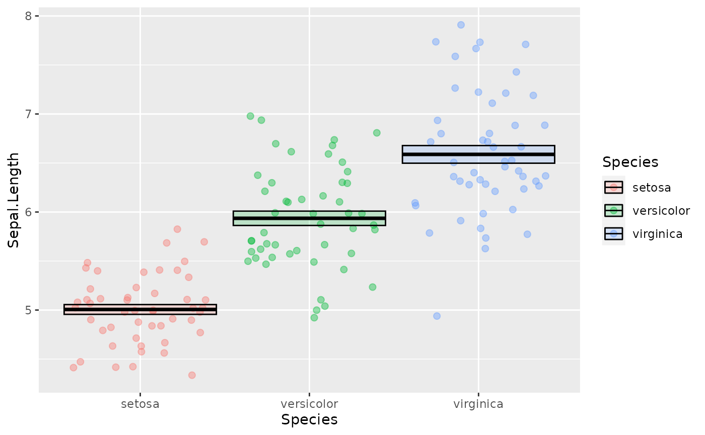
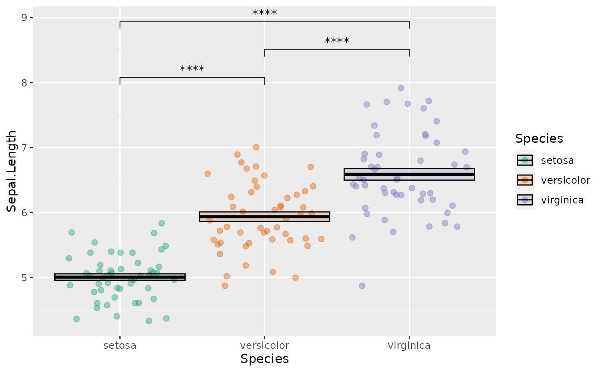
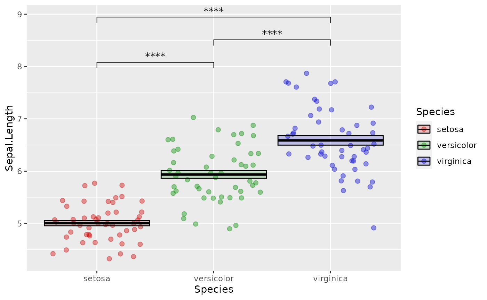
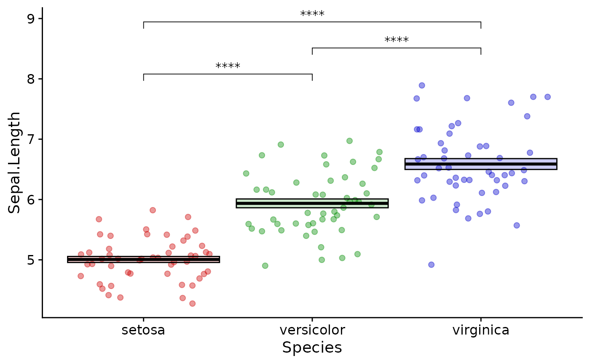

Week 3: Next Level R
week_3.RmdIntroduction
This lecture introduces more advanced concepts in R. You should have some level of comfort with the basic data types and structures and how to assign values to variables. Here we will learn ways in which R can automate complex or repetitive tasks in a way that is error-resistant.
Scope
Scope is a concept in computer science that has to do with how the names and values of variables relate to each other. It refers to the part of a program where the name of a variable representing a piece of data or a function is valid.
If you have a function or piece of data in your global environment with the same name as a different function or piece of data in a certain package, R will have to decide which you are referring to when you put that name in your code. In this case, the global environment takes priority.
But let’s say early in an analysis script I choose to represent a
piece of data with the variable name x. This is probably
not a wise choice, since x is a commonly used name. Maybe
later in the script I represent a different piece of data with the the
variable name x. This overwrites the old version because
they were created with the same scope, i.e. the global environment.
Finally when I want to use x I could make an error because
I didn’t realize that I had referred to it twice in my analysis
script.
There are ways to protect against this:
- use pipes to avoid saving intermediate values (see previous lecture)
- use unique and informative variable names for the things you must save
- use functional programming techniques (this lecture)
- package processed data (subsequent lecture)
In R by default, functions have their own scope, meaning they create their own special transient environment to store names and values of variables which does not affect the global environment. These values can be passed in as arguments to the function or can be created internally. When the function is complete, this environment goes away. The function environment is the highest priority environment for that function and therefore is the first place R looks for values. If the value of a variable in the body of the function isn’t found it goes up a level in scope, which is usually the global environment (or to the environment of an enclosing function). This behavior is error-prone and we should try to avoid it.
By specifying all of the external variables your function needs as arguments, you force the function to stay within its own scope which is a safer way to go.
Using functional programming practices like this is a safe way to prevent unrecognized errors in your analysis code.
Writing custom functions
Functions are expressions of code that usually take input values and return output values. Output is returned to the console or can be assigned to a new variable. Functions have names and can behave much like other objects in R. They can be operated on by other functions as we will see later. Functions can also have side effects, meaning they can produce graphics or write files which are separate from their main outputs.
Here is the syntax you must use when writing functions in R:
# simple function to add two numbers
function_name <- function(argument_1, argument_2) {
result <- argument_1 + argument_2
return(result)
}
function_name(argument_1 = 1, argument_2 = 2)
#> [1] 3These names are for demonstration only; you should always pick names that are explicit and clear.
There are syntactic shortcuts you can make when writing and calling functions, but this is the clearest and best way to go.
In order to demonstrate the concept of scope from the previous section, see this example:
# both arguments will be contained within the function's scope
good_sum <- function(addend_1, addend_2) {
result <- addend_1 + addend_2
return(result)
}
good_sum(addend_1 = 1, addend_2 = 2)
#> [1] 3
# addend_1 provided in the global environment which is inherited by the function
bad_sum <- function(addend_2) {
result <- addend_1 + addend_2
return(result)
}
addend_1 <- 2
bad_sum(addend_2 = 2)
#> [1] 4
# the function's scope supersedes the global environment
good_sum(addend_1 = 3, addend_2 = 2)
#> [1] 5You always want to explicitly pass arguments into functions and
explicitly return results as shown in good_sum.
By design, functions can return only a single value (although they can produce any number of side effects). This is OK because if you wanted to return more than one object, all you have to do is put them in a list and return the list:
two_averages <- function(x) {
# calculate the mean and median
mean <- mean(x)
median <- median(x)
# put all of the results we want into a list
return_list <- list(mean, median)
# optionally provide names to the list elements so we know exactly what they are
names(return_list) <- c("the_mean", "the_median")
return(return_list)
}
two_averages(x = c(1, 2, 3, 4, 5.5))
#> $the_mean
#> [1] 3.1
#>
#> $the_median
#> [1] 3You don’t have to provide names for your return list but in many
cases it is helpful. You can notice here that I used x to
represent the argument of the function. Since this is a private variable
only used within the scope of the function I am free to do this any time
I want in the context of my global environment.
Conditionals
Conditional statements (if/then/else) are particularly useful inside your custom functions. Use them to provide logic to your function or to catch errors.
unsafe_divide <- function(x, y) {
result <- x/y
return(result)
}
# returns Infinity which is not a useful value
unsafe_divide(x = 1, y = 0)
#> [1] Inf
safe_divide <- function(x, y) {
if (y == 0) {
result <- "You can't divide by 0"
} else {
result <- x/y
}
return(result)
}
safe_divide(x = 1, y = 0)
#> [1] "You can't divide by 0"Map/Apply
You should never repeat yourself when performing an analysis. Copy/pasting code is error prone. It is better to encode a method for the computer to do the repetition.
There are a few mechanisms to do this. You may be familiar with for loops. We won’t be discussing these because they have a number of disadvantages, one of which is that they tend to operate in the global environment which can cause scope issues as discussed above.
The best mechanism for doing an iterative procedure is to use the “map” paradigm. I prefer to use the tidyverse implementation here, from the purrr package.
You provide a vector or list of values that you want to iteratively apply a function to. There are syntactic shortcuts which are confusing and should generally be avoided, so even for simple examples I write them like this.
# attach the packages we will need
library(tidyverse)
# return the results in the form of a list
map(
.x = c(1, 2, 3),
.f = function(x) {
result <- x + 1
return(result)
}
)
#> [[1]]
#> [1] 2
#>
#> [[2]]
#> [1] 3
#>
#> [[3]]
#> [1] 4
# return a numeric vector instead
map_dbl(
.x = c(1, 2, 3),
.f = function(x) {
result <- x + 1
return(result)
}
)
#> [1] 2 3 4
# map along two vectors
map2(
.x = c(1, 2, 3),
.y = c("The first result is ",
"The second result is ",
"The final result is "),
.f = function(x, y) {
result <- x + 1
return(paste0(y, result))
}
)
#> [[1]]
#> [1] "The first result is 2"
#>
#> [[2]]
#> [1] "The second result is 3"
#>
#> [[3]]
#> [1] "The final result is 4"
# map along an arbitrary number of lists or vectors
pmap(
.l = list(
x = c(1, 2, 3),
begin_text = c("The first result is ",
"The second result is ",
"The final result is "),
end_text = c(" apples", " bananas", " cherries")
),
.f = function(x, begin_text, end_text) {
result <- x + 1
return(paste0(begin_text, result, end_text))
}
)
#> [[1]]
#> [1] "The first result is 2 apples"
#>
#> [[2]]
#> [1] "The second result is 3 bananas"
#>
#> [[3]]
#> [1] "The final result is 4 cherries"The first of these examples is much more easily (and quickly) accomplished with vectorized math. But as you can see, things can get more complicated and at some point you may want to write a custom function to create the output you want.
The map family has a number of variants that return the result in the form of vectors or dataframes, depending on what the output is.
Plotting
Plotting results is a major feature of what we do in the sciences. There are principles for effective visual representation of data. There are many resources for you to use for effectively presenting your data in R. Generally though you will want to start by making graphics look like they look in a high-quality publication. Google is your best way to find out how to make any plot in R.
You may be able to get comparable results with an interactive program like GraphPad or Excel. R will let you work in a programmatic way (letting the computer do the work for you), with greater control, and better aesthetics. Eventually you will be able to make more sophisticated graphics not possible in other programs.
The purpose of this lecture is not to tell you what is aesthetically best but rather to teach you how to control the aesthetics of the plots you are making to suit your own circumstances.
Plot framework
The program we use for plotting most data in R is ggplot2. You start with ggplot by providing data and mapping dimensions of your data to aesthetics. This generates a “framework” for your plot to which you add layers. Each layer adds or changes the visual output of the plot.
In this context, one aesthetic is used to describe one dimension of your data. Common aesthetics include x and y which represent the position in space on a plot. Others include color, fill, size, shape, alpha (transparency) and label (a text label), all of which can be used to describe dimensions of your data.
As a simple example:
# example data
as_tibble(iris)
#> # A tibble: 150 × 5
#> Sepal.Length Sepal.Width Petal.Length Petal.Width Species
#> <dbl> <dbl> <dbl> <dbl> <fct>
#> 1 5.1 3.5 1.4 0.2 setosa
#> 2 4.9 3 1.4 0.2 setosa
#> 3 4.7 3.2 1.3 0.2 setosa
#> 4 4.6 3.1 1.5 0.2 setosa
#> 5 5 3.6 1.4 0.2 setosa
#> 6 5.4 3.9 1.7 0.4 setosa
#> 7 4.6 3.4 1.4 0.3 setosa
#> 8 5 3.4 1.5 0.2 setosa
#> 9 4.4 2.9 1.4 0.2 setosa
#> 10 4.9 3.1 1.5 0.1 setosa
#> # … with 140 more rows
# make the plot framework
ggplot(data = iris, mapping = aes(x = Species, y = Sepal.Length))
So we have the framework. X and Y are correctly mapped to the dimensions of our data, but we haven’t told ggplot how to display it.
Graphical elements are called geoms:
# add a basic geom
ggplot(data = iris, mapping = aes(x = Species, y = Sepal.Length)) +
geom_jitter()
Jitter is a nice geom to use because it reduces overplotting.
Although not necessary for this plot in isolation, maybe you want to have each Species depicted with a different color to align with a graphical theme in your figure.
ggplot(data = iris, mapping = aes(x = Species, y = Sepal.Length, color = Species, fill = Species)) +
geom_jitter(shape = 21, alpha = 0.4, size = 2)
For most journals you want to show a measure of central tendency and variation like mean +/- sem.
ggplot(data = iris, mapping = aes(x = Species, y = Sepal.Length, color = Species, fill = Species)) +
geom_jitter(shape = 21, alpha = 0.4, size = 2) +
stat_summary(fun.data = mean_se,
geom = "crossbar",
color = "black",
alpha = 0.2)
Often we want those nice p value indicators. This is tedious to add in R directly so we use a helper function from the ggpubr package:
library(ggpubr)
ggplot(data = iris, mapping = aes(x = Species, y = Sepal.Length, color = Species, fill = Species)) +
geom_jitter(shape = 21, alpha = 0.4, size = 2) +
stat_summary(fun.data = mean_se,
geom = "crossbar",
color = "black",
alpha = 0.2) +
stat_compare_means(method = "t.test",
label = "p.signif",
comparisons = list(c("setosa", "versicolor"),
c("versicolor", "virginica"),
c("setosa", "virginica")))
We can change the default colors using custom scales:
ggplot(data = iris, mapping = aes(x = Species, y = Sepal.Length, color = Species, fill = Species)) +
geom_jitter(shape = 21, alpha = 0.4, size = 2) +
stat_summary(fun.data = mean_se,
geom = "crossbar",
color = "black",
alpha = 0.2) +
stat_compare_means(method = "t.test",
label = "p.signif",
comparisons = list(c("setosa", "versicolor"),
c("versicolor", "virginica"),
c("setosa", "virginica"))) +
scale_fill_brewer(palette = "Dark2", aesthetics = c("fill", "color"))
You can look up some nice, visually distinct color palettes using color brewer.
You can also set your own custom scales:
ggplot(data = iris, mapping = aes(x = Species, y = Sepal.Length, color = Species, fill = Species)) +
geom_jitter(shape = 21, alpha = 0.4, size = 2) +
stat_summary(fun.data = mean_se,
geom = "crossbar",
color = "black",
alpha = 0.2) +
stat_compare_means(method = "t.test",
label = "p.signif",
comparisons = list(c("setosa", "versicolor"),
c("versicolor", "virginica"),
c("setosa", "virginica"))) +
scale_fill_manual(values = c("setosa" = "red3",
"versicolor" = "green4",
"virginica" = "blue3"),
aesthetics = c("fill", "color"))
Finally you can change the look of the axes, labels and legends.
There are many different lines of code you can use to do this, most of
which start with theme(). I usually prefer to start with a
preset theme which looks nice for almost all plots. We can also get rid
of the legend which doesn’t help much in this case:
library(cowplot)
ggplot(data = iris, mapping = aes(x = Species, y = Sepal.Length, color = Species, fill = Species)) +
geom_jitter(shape = 21, alpha = 0.4, size = 2) +
stat_summary(fun.data = mean_se,
geom = "crossbar",
color = "black",
alpha = 0.2) +
stat_compare_means(method = "t.test",
label = "p.signif",
comparisons = list(c("setosa", "versicolor"),
c("versicolor", "virginica"),
c("setosa", "virginica"))) +
scale_fill_manual(values = c("setosa" = "red3",
"versicolor" = "green4",
"virginica" = "blue3"),
aesthetics = c("fill", "color")) +
theme_cowplot() +
theme(legend.position = "none")
Keeping your plot functions organized in this way is a good idea so you can quickly go back and change things when necessary.
Basic statistical testing
This is not a biostatistics course, but you will probably want to know how to perform things like t-tests and wilcox tests on your data.
R can perform a large number of statistical tests with base functions:
t.test(x = iris |>
filter(Species == "setosa") |>
pull(Sepal.Length),
y = iris |>
filter(Species == "versicolor") |>
pull(Sepal.Length),
var.equal = FALSE)
#>
#> Welch Two Sample t-test
#>
#> data: pull(filter(iris, Species == "setosa"), Sepal.Length) and pull(filter(iris, Species == "versicolor"), Sepal.Length)
#> t = -10.521, df = 86.538, p-value < 2.2e-16
#> alternative hypothesis: true difference in means is not equal to 0
#> 95 percent confidence interval:
#> -1.1057074 -0.7542926
#> sample estimates:
#> mean of x mean of y
#> 5.006 5.936What is happening here is that we are filtering the dataset twice (once for each group we want to compare) and then pulling the value from the resulting dataframe as a numerical vector. This is fed into the t.test function.
For me, the base function above is painful both to type and to read. You may wish to use a more concise method:
library(rstatix)
# print out a table of descriptive values
iris |>
group_by(Species) |>
get_summary_stats()
#> # A tibble: 12 × 14
#> Species varia…¹ n min max median q1 q3 iqr mad mean sd
#> <fct> <fct> <dbl> <dbl> <dbl> <dbl> <dbl> <dbl> <dbl> <dbl> <dbl> <dbl>
#> 1 setosa Sepal.… 50 4.3 5.8 5 4.8 5.2 0.4 0.297 5.01 0.352
#> 2 setosa Sepal.… 50 2.3 4.4 3.4 3.2 3.68 0.475 0.371 3.43 0.379
#> 3 setosa Petal.… 50 1 1.9 1.5 1.4 1.58 0.175 0.148 1.46 0.174
#> 4 setosa Petal.… 50 0.1 0.6 0.2 0.2 0.3 0.1 0 0.246 0.105
#> 5 versico… Sepal.… 50 4.9 7 5.9 5.6 6.3 0.7 0.519 5.94 0.516
#> 6 versico… Sepal.… 50 2 3.4 2.8 2.52 3 0.475 0.297 2.77 0.314
#> 7 versico… Petal.… 50 3 5.1 4.35 4 4.6 0.6 0.519 4.26 0.47
#> 8 versico… Petal.… 50 1 1.8 1.3 1.2 1.5 0.3 0.222 1.33 0.198
#> 9 virgini… Sepal.… 50 4.9 7.9 6.5 6.22 6.9 0.675 0.593 6.59 0.636
#> 10 virgini… Sepal.… 50 2.2 3.8 3 2.8 3.18 0.375 0.297 2.97 0.322
#> 11 virgini… Petal.… 50 4.5 6.9 5.55 5.1 5.88 0.775 0.667 5.55 0.552
#> 12 virgini… Petal.… 50 1.4 2.5 2 1.8 2.3 0.5 0.297 2.03 0.275
#> # … with 2 more variables: se <dbl>, ci <dbl>, and abbreviated variable name
#> # ¹variable
# do the t-test
iris |>
t_test(formula = Sepal.Length ~ Species)
#> # A tibble: 3 × 10
#> .y. group1 group2 n1 n2 stati…¹ df p p.adj p.adj…²
#> * <chr> <chr> <chr> <int> <int> <dbl> <dbl> <dbl> <dbl> <chr>
#> 1 Sepal.Length setosa versi… 50 50 -10.5 86.5 3.75e-17 7.5 e-17 ****
#> 2 Sepal.Length setosa virgi… 50 50 -15.4 76.5 3.97e-25 1.19e-24 ****
#> 3 Sepal.Length versi… virgi… 50 50 -5.63 94.0 1.87e- 7 1.87e- 7 ****
#> # … with abbreviated variable names ¹statistic, ²p.adj.signifrstatix is a useful package for extending the base statistical functions of R.
Exercises
- practice writing your own simple functions
- read in data from your own work, plot it with ggplot and perform
statistical testing. Try using some different geoms:
geom_jitter()andgeom_col()are the most useful. - use
readr::write_csv()to write out a table of statistical results andcowplot::save_plot()to save your plot - use
purrr::map()to apply a function iteratively - Extra credit: use
cowplot::plot_grid()to compose multiple plots into a figure